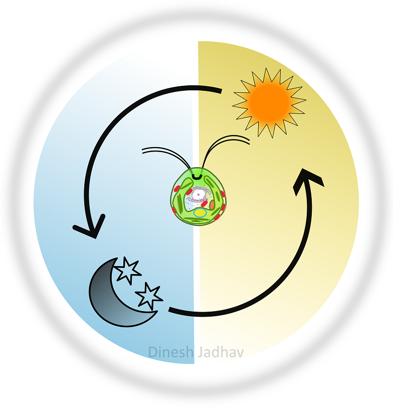

circadian clocks regulates the daily physiology of an organism according to the time of the day. Transcription and
Translational Feedback Loops (TTFLs) are believed to be the underlined molecular mechanism responsible for this
daily regulation of the physiology. However, recent
studies have shown that the clock controls the physiology beyond TTFLs at the post-transcriptioan or translational
levels. In my PhD project, using the single cell algae I investigate regulation of the clock at the
posttranscriptioanl and translational level
Abstract
Timing of biological processes enable organisms to sustain the diurnal fluctuations resulting from earth’s rotation.
Circadian clocks execute this temporal regulation by modulating temporal expression of genes. Clock regulation of
mRNAs was envisioned as the primary driver of daily rhythms. However, mRNA oscillations often don’t concur with the
downstream protein oscillations. To assess the contribution from post-transcriptional processes, we quantitatively
probed the Chlamydomonas proteome for two circadian cycles. Our study suggests rampant role of posttranscriptional
processes in clock regulation of Chlamydomonas metabolism. We quantified >1000 proteins, half of which demonstrate
circadian rhythms. Among these rhythmic proteins, >40% originate from non-rhythmic mRNAs and > 90% peak around
midday or midnight. Accumulation rhythms of proteins rather than their encoding mRNAs shows extreme coordination. We
uncovered new rhythms and accounted for physiological rhythms whose mechanistic details remained undocumented from
earlier transcriptomic studies. We envisage our study will refine and enrich the evaluation of temporal metabolic
processes in Chlamydomonas. Owing to Chlamydomonas’s unique phylogeny this study can lead to new insights into
evolution of clock regulation across kingdoms.
Circadian proteomics reveal rampant tuning of
post-transcriptional apparatus by Chlamydomonas clock